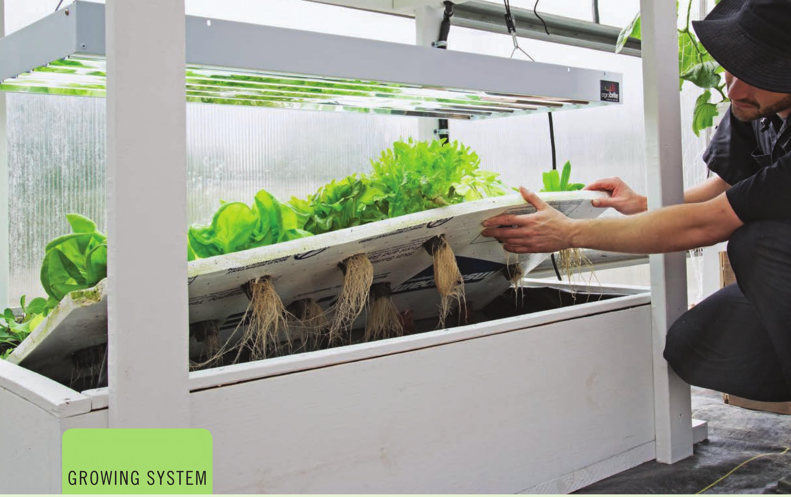

GROWING SYSTEM FLOATING RAFTS Floating raft hydroponics is a subtype of deep water culture (DWC) hydroponics. Most traditional DWC systems hold the plant at a set height and the nutrient solution is refilled to maintain contact with the roots. Floating raft hydroponics allows the plant to remain in contact with the nutrient solution even as the water level drops. Floating raft systems require very little labor and maintenance. It is common to not perform any maintenance on the system, not even adding water, from transplant to harvest when growing leafy greens. CROPS Floating raft hydroponics has been used for large flowering crops like tomatoes but it is most appropriate for shorter crops with lower oxygen requirements in their root zone. Traditional DWC systems are great for these larger flowering crops because they create space for the roots to access air and they often use air pumps to heavily aerate the nutrient solution. I've trialed hundreds of crops in floating raftsand I'm amazed at the versatility of this growing method. The sidebar on the next page lists some crops that can be grown in floating rafts. In a floating raft, the buoyant planting platform actually floats on the nutrient solution. • Suitable Locations: Indoors, outdoors, or greenhouse • Size: Small to large • Growing Media: Stone wool seedling cubes • Electrical: Optional • Crops: Leafy greens and herbs 50 DIY HYDROPONIC GARDENS
